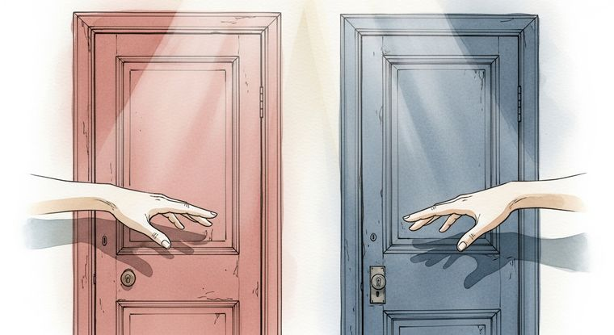

Shadow Effect: quando il team frena senza sapere perché
Perché i team aziendali perdono slancio anche con persone competenti? La risposta sta nella frizione invisibile che nasce quando si reprime il proprio design naturale.
Cos'è lo Shadow Effect e perché rallenta i team
Lo Shadow Effect è la frizione energetica invisibile che si accumula nei team quando le persone reprimono il proprio Tipo di Carriera BG5 per conformarsi a ruoli aziendali standardizzati. Questa frizione non compare nei report, non viene discussa nelle retrospettive di progetto, eppure è il motivo principale per cui gruppi di persone competenti perdono slancio collettivo senza una causa apparente. Il team produce, ma a un costo biologico che nel tempo diventa insostenibile.
Il meccanismo è semplice nella sua struttura e devastante nelle conseguenze: ogni persona ha una meccanica aurica specifica, un modo corretto di investire la propria energia nel lavoro. Quando quella meccanica viene ignorata o compressa dentro un modello uniforme, il risultato è una dispersione continua che si scarica sull'intero gruppo.
Perché una Guida che imita un Costruttore crea attrito?
La Guida (Proiettore in Human Design) possiede un'aura focalizzata e assorbente, progettata per penetrare nel funzionamento degli altri e ottimizzare il modo in cui l'energia viene distribuita. Il suo contributo naturale è dirigere, riconoscere i talenti altrui e posizionare le persone giuste nei ruoli giusti. La Guida rappresenta circa il 20% della popolazione e il suo segnale di allineamento è il successo, che arriva quando viene riconosciuta e invitata a guidare.
Il Costruttore (Generatore), invece, possiede il centro Sacrale definito, una fonte di energia rinnovabile che si ricarica ogni notte come una batteria. È progettato per lavorare in modo sostenuto, rispondendo agli stimoli della vita con la propria energia vitale. I Costruttori rappresentano circa il 70% della popolazione e il mondo lavorativo è strutturato attorno al loro ritmo.
Quando un'azienda assegna a una Guida lo stesso carico operativo e le stesse aspettative di un Costruttore, accade qualcosa di preciso: la Guida tenta di sostenere un ritmo sacrale che non le appartiene. Per qualche settimana o qualche mese può funzionare, perché la Guida amplifica l'energia sacrale presente nell'ambiente circostante. Ma quell'energia non è la sua, e il corpo lo sa. Il risultato è un esaurimento progressivo che si manifesta come amarezza cronica, il segnale di disallineamento specifico della Guida.
Qual è il costo reale per il team?
La frizione generata dallo Shadow Effect opera su due livelli simultanei. Il primo è individuale: la persona disallineata consuma più risorse di quante ne produca, entra in una spirale di compensazione che erode la salute e la motivazione. Il secondo livello è collettivo, ed è quello che le aziende sottovalutano con regolarità.
Una Guida esaurita che occupa una posizione operativa toglie al team la funzione che le sarebbe naturale: l'ottimizzazione della distribuzione delle risorse. È come avere un direttore d'orchestra costretto a suonare il violoncello. Magari suona discretamente, ma nessuno dirige, e l'orchestra perde coesione senza capire il motivo. I progetti rallentano, le riunioni si moltiplicano, le decisioni vengono rimandate perché manca chi sappia leggere la dinamica del gruppo e indicare dove ciascuno dovrebbe essere posizionato.
I KPI tradizionali misurano l'output finale ma non registrano il costo energetico con cui quell'output viene raggiunto. Una Guida che produce numeri accettabili nel breve periodo maschera un deterioramento strutturale che emerge solo quando lo slancio collettivo si è già fermato.
Come si identifica lo Shadow Effect in un'organizzazione?
Il primo indicatore è la presenza ricorrente di persone competenti che si sentono cronicamente stanche o insoddisfatte senza una ragione legata al carico di lavoro oggettivo. Il secondo indicatore è un rallentamento diffuso che persiste anche dopo aver ottimizzato processi, strumenti e risorse esterne.
L'analisi BG5 del Disegno di Carriera permette di mappare il Tipo di Carriera di ogni membro del team e confrontarlo con il ruolo effettivamente ricoperto. Quando si scopre che una Guida sta occupando una posizione da Costruttore, o che un Iniziatore (Manifestatore) viene costretto ad aspettare approvazioni in catena invece di informare e agire, la fonte della frizione diventa visibile e concreta.
La redistribuzione delle responsabilità secondo il design naturale di ciascuno produce risultati che i manager descrivono spesso come sorprendenti, ma che in realtà sono semplicemente il ripristino di un funzionamento corretto. La Guida torna a guidare, il Costruttore torna a costruire con soddisfazione, e l'Iniziatore torna a dare il via ai processi con la sua energia diretta.
Cosa fare quando il team perde slancio senza motivo
La domanda da porsi quando un team competente rallenta senza cause evidenti riguarda la distribuzione dei ruoli rispetto alla meccanica naturale delle persone coinvolte. Chi sta operando fuori dal proprio design? Chi sta compensando un disallineamento con sforzo volontario invece che con energia autentica?
Una Panoramica BG5 del Disegno di Carriera individuale è il punto di partenza per ogni membro chiave del team. Da lì si costruisce la mappa delle interazioni reali, si identificano le sovrapposizioni disfunzionali e si riprogetta la struttura del gruppo attorno a ciò che ogni persona porta naturalmente, senza compressione e senza mimetismo. Il talento che l'azienda ha già pagato smette di essere soppresso e torna a produrre valore nel modo per cui è stato progettato.
Domande Frequenti
Cos'è lo Shadow Effect nei team aziendali secondo il BG5?
È il rallentamento collettivo causato dalla repressione del Tipo di Carriera naturale. Quando i membri del team operano fuori dal proprio design BG5, si genera una frizione energetica che consuma risorse senza essere visibile nei report di performance tradizionali.
Cosa succede quando una Guida lavora come un Costruttore?
La Guida ha un'aura focalizzata e assorbente, progettata per dirigere e ottimizzare il lavoro altrui, non per sostenere ritmi sacrali. Quando tenta di produrre come un Costruttore, si esaurisce rapidamente perché non possiede energia sacrale rinnovabile. Il risultato è amarezza cronica e burnout.
Perché i KPI tradizionali non rilevano questa frizione?
I KPI misurano output, tempi e obiettivi raggiunti, ma non rilevano il costo energetico con cui quei risultati vengono ottenuti. Una Guida esaurita può ancora produrre numeri accettabili nel breve periodo, mascherando un deterioramento strutturale che emerge solo quando il team perde slancio collettivo.
Come si risolve lo Shadow Effect in un team?
Attraverso un'analisi BG5 dei Disegni di Carriera individuali e della dinamica di gruppo. Si identifica il Tipo di Carriera di ogni membro, si verificano i disallineamenti tra ruolo assegnato e meccanica naturale, e si redistribuiscono le responsabilità secondo il design corretto di ciascuno.
Vuoi portare il BG5® nella tua azienda?
Se vuoi capire come si applica alla tua realtà, scopri i servizi disponibili. Se sai già cosa cerchi, prenota una consulenza diretta.
Continua a leggere

Ansia da decisione: perché non riesci a scegliere e come uscirne
Ti blocchi davanti alle decisioni importanti? L'ansia da scelta ha una causa precisa: stai usando la mente per decidere …
Leggi articolo →Come aspettare l'invito senza perdere lo slancio professionale
Se sei una Guida e senti che aspettare l'invito ti blocca la carriera, questo articolo ti mostra come affinare la tua fr…
Leggi articolo →Assumere la persona sbagliata costa 30.000 euro: un metodo per non sbagliare
Un'assunzione sbagliata costa 6-9 mesi di stipendio. Il curriculum non ti dice come la persona gestisce lo stress, prend…
Leggi articolo →BG5: perché attiri certi clienti (e come smettere di sbagliarti)
Stai attirando clienti sbagliati? Con il BG5 scopri la meccanica reale dietro la tua clientela e come la coerenza cambia…
Leggi articolo →